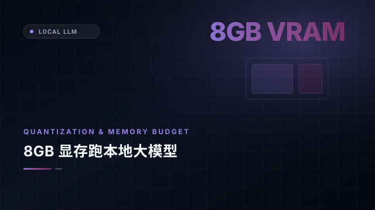

8GB 显存跑本地大模型：先算显存账，再挑模型
在 8GB 显存显卡上跑本地大模型，显存要同时分给模型权重、上下文缓存（KV Cache）和推理激活值。本文算清这笔显存账，介绍按用途拆分轻量专用模型、选择 4-bit 量化档位与控制上下文长度的实用经验。

显存预算：权重、KV Cache 与临时激活值
在消费级 8GB 显存显卡上部署本地大模型，首先需要建立清晰的显存开销模型，通常由三部分构成：模型权重占用、KV Cache 上下文缓存、推理时的临时激活显存。
以常见 7B 参数模型为例：在 fp16 半精度下，仅权重本身即占据约 14GB 显存，超出 8GB 显存物理上限；若扣除 Windows 桌面与系统驱动占用的约 0.5GB，8GB 卡实际可用显存约 7.5GB；采用 INT4（4bit）量化后，模型权重收敛至约 4GB 量级，剩余约 3.5GB 显存空间方可分配给多轮对话的 KV Cache 与动态生成计算。
所以在 8GB 显存条件下，重点不只是“能不能把模型塞进去”，而是怎么在有限显存与生成速度之间留出余量。
方案：按任务类型分层解耦
与其指望一个全能模型包揽所有活，不如按具体用途拆成几个轻量专用模型：
- 文本对话与归纳总结：选用 7B 级别 + INT4 量化模型，优先保障中文理解能力与语义通顺度。权重常驻后保留足够的上下文窗口余量。
- 向量嵌入（知识库检索）：配置专用的小参数量 Embedding 模型（如 bge-m3），体积小、显存开销低，并与生成模型分时调度。
- 多模态语义解析与 OCR：选用轻量端侧视觉语言模型（如 Qwen2.5-VL-3B / 7B），专职负责图像语义提取与特征解析。
通过任务解耦，各专用轻量模型在 8GB 显存下均能平稳运行，整体工程实用性显著优于强行塞入超大单体模型。
核心难点与工程排障
- 先定量化档位，再挑模型大小。 8GB 显存跑 7B~8B 模型时，优先选
Q4_K_M这类主流 4-bit 量化版——比原版 fp16 省下近七成显存且日常问答损耗很小；盲目选更高精度极易在长对话时触发显存溢出（OOM）。 - 警惕上下文窗口成比例增长。 静态模型权重固定不变，但 KV Cache 会随着对话轮次与上下文长度成比例增长。默认配置若盲目开放过大上下文，极易在推理中期撑爆显存。
- 避免生成模型与嵌入模型双重常驻。 多模型同时常驻显存会造成显存争抢，导致推理性能骤降。
- “能加载”不等于“能顺畅对话”。 若模型体积卡在临界点，超出部分会被分摊到系统内存和 CPU 计算，生成速度会跌到每秒一两个字，不如直接换小一号模型。
- 别迷信综合跑分榜，以本机实测为准。 4-bit 压缩后部分高分模型的中文指令遵循会缩水，拿自己常处理的真实文本跑几轮最可靠。
结论
8GB 显存跑本地模型并不难，关键在于把显存的账算在前面：选好量化精度、定好上下文长度、用完及时释放显存。把资源留出余量，推理不卡顿，平时用起来才真正顺手。